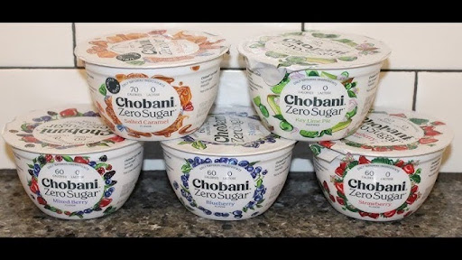
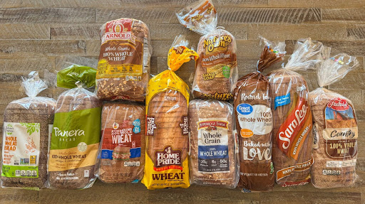
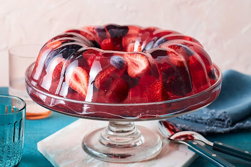

Haben Sie sich morgens schon einmal auf die Waage gestellt, zugesehen, wie die Zahl wieder ein Stück nach oben geklettert ist, und dieses beklemmende Gefühl in der Brust gespürt?
Haben Sie Ihren Kleiderschrank geöffnet, die Hose angeschaut, die letztes Jahr noch passte, und feststellen müssen, dass sie nicht einmal mehr über die Hüften rutscht?
Oder noch schlimmer: Haben Sie unter der Woche alles „richtig“ gemacht, auf Süßigkeiten verzichtet, Salate gegessen, waren im Fitnessstudio … und trotzdem hat sich die Waage keinen Millimeter bewegt?
Forscher haben herausgefunden, dass bestimmte Lebensmittel den Körper in einen „Speichermodus“ versetzen können. Dies erschwert es dem Organismus, gespeichertes Fett als Energiequelle zu nutzen – fast unabhängig davon, wie viele Kalorien man einspart.
Das Besorgniserregende daran? Die meisten Frauen über 40 konsumieren diese Lebensmittel jeden Tag in dem Glauben, ihrem Körper etwas Gutes zu tun.
Hier sind die drei größten Übeltäter:
3. „Zuckerfreier“ Joghurt (Zero-Produkte)

Der kleine Becher, den man im Supermarktregal greift, weil er als „schlanke Option“ beworben wird, ist oft eine Falle. Studien legen nahe, dass die in diesen Produkten verwendeten künstlichen Süßstoffe das Gehirn verwirren können.
Das Gehirn empfängt das Signal „Süß“, bereitet sich auf die Verarbeitung von Zucker vor, doch die Energie bleibt aus. Das Resultat? Heißhunger-Attacken, meist schon wenige Stunden später. Und dabei verlangt der Körper selten nach Salat, sondern nach schnellen Kohlenhydraten wie Brot oder Keksen.
2. Vollkornbrot aus dem Supermarkt

Viele tauschen Weißbrot gegen Vollkornbrot in der Hoffnung auf ein Upgrade. Doch viele im Handel erhältliche Versionen enthalten fast genauso viel raffiniertes Mehl wie normales Brot, angereichert mit einer kleinen Menge Ballaststoffen für die Optik.
Der Effekt auf den Körper kann ähnlich sein: Der Blutzuckerspiegel steigt, die Bauchspeicheldrüse schüttet Insulin aus. Insulin ist jedoch ein Hormon, das dem Körper signalisiert, Fett zu speichern – insbesondere in der Körpermitte. Je höher der Insulinspiegel, desto schwerer hat es der Körper, auf vorhandene Fettreserven zuzugreifen.
1. Raffinierte Pflanzenöle
Dies ist der wohl „stillste“ Übeltäter. Sojaöl, Rapsöl oder Maisöl stecken in fast allem: Margarine, Gebäck, Dressings und Fertiggerichten.
Wenn diese Öle stark verarbeitet oder mehrfach erhitzt werden, können sie Verbindungen begünstigen, die im Körper Entzündungsprozesse fördern. Zelluläre Entzündungen können dazu führen, dass Fettzellen den Zugriff blockieren. Das ist oft der Grund, warum Frauen trotz Diät und Sport keine Fortschritte sehen – es mangelt nicht an Disziplin, sondern an einer optimalen zellulären Umgebung.
Hier kommt ein neuer Ansatz ins Spiel
Während die oben genannten Lebensmittel den Körper in einer Art „Speichermodus“ halten können, untersuchen Forscher nun einen interessanten natürlichen Ansatz, um den Stoffwechsel wieder sanft in Einklang zu bringen. Dabei könnte Gelatine ein wertvoller Begleiter sein, um diesen Prozess zu unterstützen.
Die Logik dahinter ist ebenso einfach wie einleuchtend.
Haben Sie schon einmal bemerkt, dass sich Ihr Hunger nach einer schlechten Nacht am nächsten Tag völlig unkontrollierbar anfühlt und der Heißhunger auf Süßes extrem ist? Das liegt meist nicht an mangelnder Disziplin. Es ist oft ein Signal des Körpers, der nach Unterstützung für sein hormonelles Gleichgewicht verlangt.

Natürliche, zuckerfreie Gelatine ist eine der reichsten Quellen für die Aminosäure Glycin. Diese kann dem Körper dabei helfen, während der Nacht in einen Zustand tiefer Entspannung zu finden. Und genau während dieser erholsamen Tiefschlafphasen finden im Körper wichtige Regenerationsprozesse statt, die auch die natürliche Fettverbrennung positiv beeinflussen können.
Beobachtungen aus der Praxis:
In Beobachtungen zeigten sich interessante Ergebnisse: Personen, die natürliche Gelatine in ihren Alltag integrierten, berichteten häufig davon, nachts seltener aufzuwachen und sich am nächsten Tag satter zu fühlen.
Im Laufe einiger Wochen bemerkten viele, dass ihr Körper begann, gespeicherte Energiereserven wieder effizienter zu nutzen – ein Gefühl, als würde der Körper nach Jahren des Stillstands endlich wieder „mitspielen“.
Die häufigsten Rückmeldungen:
- Erholsamere Nächte und tieferer Schlaf
- Deutlich weniger Heißhunger auf Süßigkeiten
- Das Gefühl, dass der Körper wieder im natürlichen Rhythmus arbeitet
Gibt es einen Haken?
Die Herausforderung für viele Frauen ist jedoch: Herkömmliche Gelatine-Produkte aus dem Supermarkt sind oft mit Zucker, künstlichen Farbstoffen und Zusatzstoffen versetzt, welche die positiven Effekte auf den Stoffwechsel sofort wieder zunichtemachen könnten.
Zudem müsste man enorme Mengen konsumieren, um die therapeutisch relevante Dosis an reinem Glycin zu erhalten, die in den Beobachtungen den entscheidenden Unterschied machte. Aus diesem Grund haben Experten eine hochkonzentrierte Lösung entwickelt, die genau hier ansetzt.

Die spezialisierte Glycin-Formel für Frauen über 40
Diese rein natürliche Formel wurde entwickelt, um die nächtliche Regeneration gezielt zu unterstützen und den Körper dabei zu begleiten, seine natürlichen Energiereserven wieder optimal zu nutzen.
- ✓ Hochdosiertes Glycin in reinster Qualität
- ✓ Frei von künstlichen Zusätzen & Zucker
- ✓ Speziell für den weiblichen Hormonhaushalt ab 40
Möchten Sie die Verfügbarkeit prüfen?
Auf der offiziellen Webseite erfahren Sie mehr über die Inhaltsstoffe und aktuelle Angebote.
Sichere Verbindung & Datenschutz garantiert
Wichtiger Hinweis: Die Informationen in diesem Artikel dienen ausschließlich Informationszwecken. Bei dem verlinkten Produkt handelt es sich um ein Nahrungsergänzungsmittel. Die individuellen Ergebnisse können variieren. Es wird empfohlen, vor der Einnahme neuer Präparate Rücksprache mit einem Arzt zu halten.